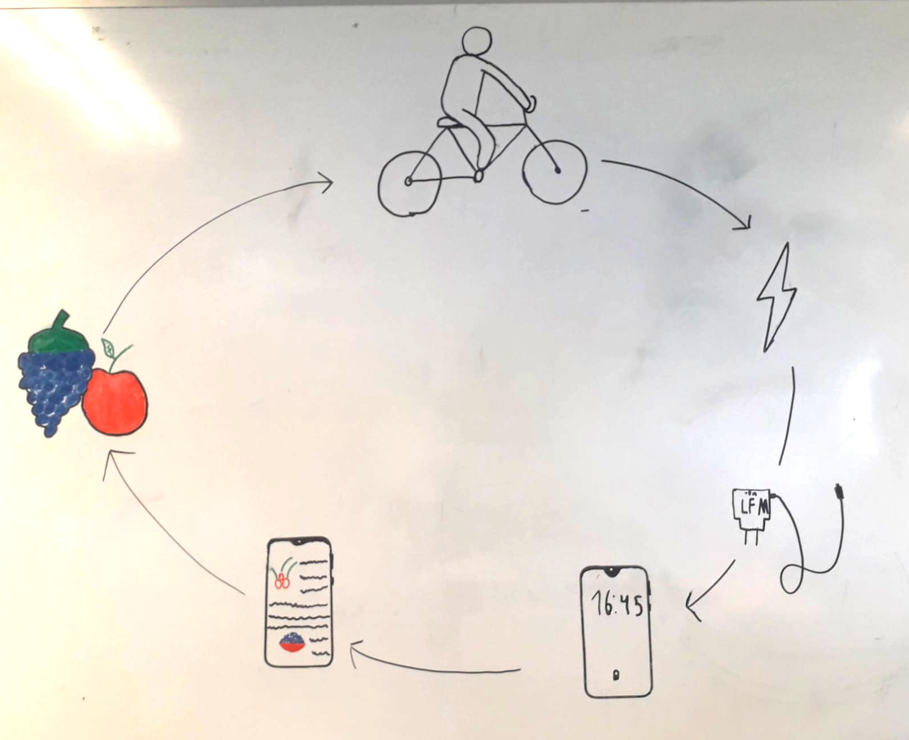

Problema
El problema que notamos en nuestra ciudad, es que se recorren cortas distancias con automóvil o moto, generando una alta tasa de gases contaminantes.
Para transitar por nuestra localidad de punta a punta se emiten unos 300 gr de CO2 aproximadamente y esta cifra puede ser superior en ciudades más grandes como lo es Montevideo.
Estas emisiones se acumulan en la atmósfera y sobrecalientan el planeta, acelerando el cambio climático.
Solución
Para reducir la huella de carbono podemos andar en bicicleta.
Es una solución simple, pero generalmente no pensamos que al realizar esta actividad también podemos estar generando energía y favoreciendo a la descarbonización del ambiente.
Idea
Construir una bicicleta que permita transitar por la ciudad de forma segura y al mismo tiempo generar energía limpia que podemos utilizar, por ejemplo para cargar un celular e iluminación.
Para ello le agregamos un dinamo que permite transformar la energía mecánica en energía eléctrica.
Y además mientras se anda en bicicleta se puede cargar un celular.

La energía eléctrica generada carga pilas que sirven de alimentación para dos placas micro:bit que tienen la función de señaleros y baliza al frenar y por la noche.

También alimenta una placa arduino que puede calcular la distancia recorrida mediante contar las vueltas que realiza una de las ruedas, utilizando un imán y sensor de efecto hall, la distancia obtenida se muestra en una pantalla.

Construcción
En el siguiente vídeo te mostramos cómo fue el proceso de construcción de la bicicleta sustentable Golden Black